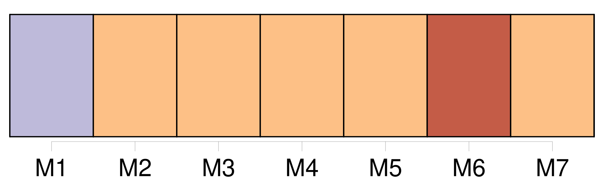
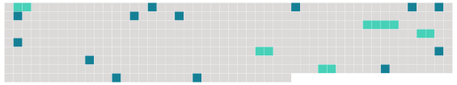

Longueur nb maillons : 18 mentions |
 |
Clarification [Il] l'a sauvée. Sans trop de brio certes, mais avec un discours qui [lui] a permis de dire : voilà qui je suis, voilà où [je] vais ; [il] a fait [son] travail de chef de parti.
Et à défaut d'éblouir, [il] a éclairé. Après [son] intervention, les amis et alliés ne se sont pas roulés par terre de bonheur. [1 phrases] Dans cette histoire d'hommes et de convictions, on a bien compris que l'encens de l'unanimité n'entourerait pas [l'actuelle direction socialiste] avant le congrès de Dijon. [1 phrases] Alors que la cassure est faite entre les partisans d'un socialisme ambitieux, créatif, non dépourvu de réalisme et cependant conforme aux valeurs de la gauche, et les tenants d'une idéologie rétrograde, l'essentiel pour [François Hollande] était de délimiter [son] périmètre, afin que le PS n'ait plus la sensation de s'agiter au-dessus du vide. [2 phrases] Ils s'en remettent donc à [François Hollande] [1 phrases]
Persuadés aussi que les généraux qui [l'] entourent aujourd'hui et se nourrissent du même pain politique que [lui] seront à terme source de difficultés. [1 phrases] Pour l'heure, [François Hollande] fait front. Hier, [il] a remporté la première manche, celle du conseil national.
Pour espérer gagner le congrès de Dijon, [il] aura besoin d'un projet plus flamboyant que [son] intervention stratégique et un peu plate, de samedi. |
 |
Il est possible de télécharger la ressource sur la page Ortolang |
Si vous avez des questions ou vous voyez des erreurs, merci d'envoyer un mail à silvia.federzoni89@gmail.com |